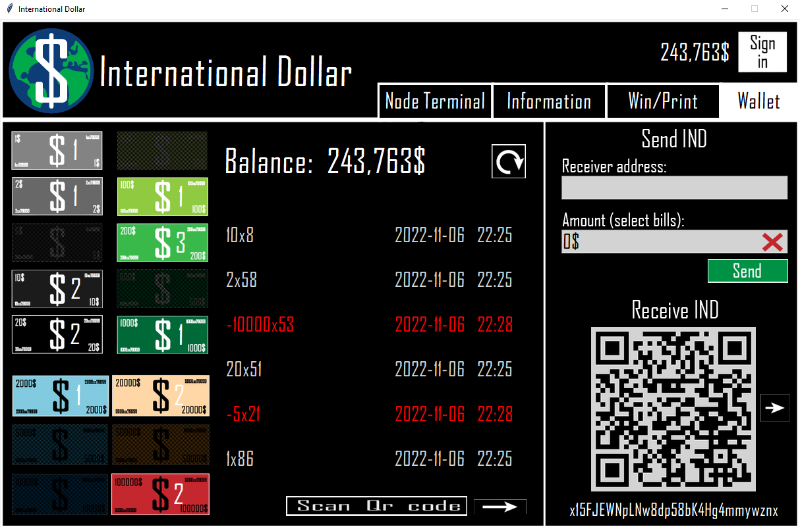

An open source project designed to modernize the financial system
Windows 10/11 Linux MacOS
Github link: https://github.com/
All code is open source and available on GitHub
sha256 hash: 'INSERT HASH'
About 5,000 years ago that the Mesopotamian people created the shekel,
which is considered the first known form of currency. Since then,
we have come a long way in our monetary system. From Gold and Silver
coins, to banknotes, to wire transfers and eventually to
cryptocurrencies. Bitcoin, the first cryptocurrency created in 2009,
has started a revolution, spawning a number of new coins based
on the same blockchain technology. Now in 2022 this project is
the next step in our fiscal evolution. With a simple majority based
voting algorithm, we believe that we can deliver the same security
as the Bitcoin Blockchain. You might ask why we didn't choose the
trusted blockchain? Well our algorithm has a lot of advantages
ranging from instant and free transactions to 99.9% less energy
consumption. But most importantly, we do not seek a financial gain
from this project, all International Dollars will be slowly and
equally distributed across the community. This is not about getting
rich quick, this is about a fair financial system one step at a time.